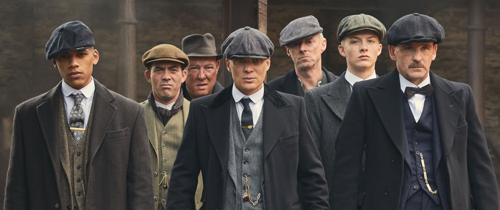

About Peaky Blinders
Peaky Blinders is a BBC Televsion series about the Shelby family from Smallheath in Birmingham during the early 1900's. The TV Show revolves around this gangter family's ambitions of grandure and path towards villainy.
Tommy shelby and the Peaky Blinders gang
Tommy's Characteristics
- He's got the power
- He's got the influence
- He's got the ambition
- But can he really have enough of each?
Tommy's Crew
Tommy has a close crew of indviduals, some family, some friends. Click on the links below to read more about them: